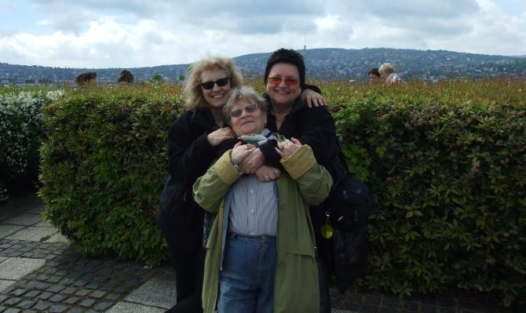

A tymczasem w Cameracie...
.
2015-05-02
Wstajemy rano, śniadanko i jedziemy na próbę. Pierwszy kościół. Teraz Dom Polski.Dobrze, że one uśmiechnięte. No bo jest wesoło! Tu też miała być panorama Budapesztu i my hahaha. Dobrze, że chociaż my jesteśmy.

Duuużo chodzimy, trzeba odpocząć, bo nóżki bolą. Jedni odpoczywają tak.


© Stowarzyszenie Muzyczne Chór Camerata Wieliczka
Projekt i wykonanie:  Prowadzenie strony: Małgorzata Wysocka-Cebula
Prowadzenie strony: Małgorzata Wysocka-Cebula